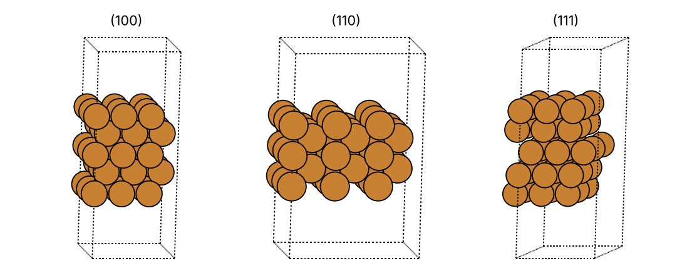

Curriculum/Computational labsLAB 201
Lab: Crystal structures in Python with ASE
Every simulation in this curriculum starts with a structure: the atoms, the cell and the periodic boundary conditions. This lab teaches the Python library ASE (the Atomic Simulation Environment), which builds and analyses structures, runs a cheap built-in potential (EMT) for quick tests, and writes the input files of LAMMPS, VASP and Quantum ESPRESSO. Nothing here needs more than a laptop and a few seconds per script, and every output shown was produced by the scripts listed.
- Reading time
- about 28 min
- Leads to
- LAB 301: Phonons: phonopy
- Level
- Year 2: core tools
- Install ASE and read an
Atomsobject: cell, positions, scaled positions, volume and density. - Build bulk crystals (fcc, bcc, hcp, diamond, rocksalt, perovskite), supercells, vacancies, substitutions and surface slabs.
- Check a structure: neighbour shells, coordination, space group and the role of the symmetry tolerance.
- Compute a lattice constant, a bulk modulus, a vacancy energy and surface energies with the EMT calculator.
- Convert between CIF, XYZ, POSCAR, LAMMPS data and Quantum ESPRESSO formats.
- Predict and index powder X-ray diffraction peaks of cubic crystals.
Step 1. Install and check#
Create an isolated environment so that nothing on your system is modified, install the packages, and check the versions. (pip works the same on Linux, macOS and Windows; on Windows use the Anaconda Prompt or WSL.)
python3 -m venv ~/venvs/cms # on Windows: py -m venv %USERPROFILE%\venvs\cms
source ~/venvs/cms/bin/activate # on Windows: %USERPROFILE%\venvs\cms\Scripts\activate
pip install ase spglib numpy matplotlib
python -c "import ase, spglib; print(ase.__version__, spglib.__version__)"3.29.0 2.8.0Your versions may be newer; the commands used below are stable across recent releases. With conda: conda install -c conda-forge ase spglib. ASE also provides a small viewer, ase gui cu.xyz (needs a display, so it does not work on a remote server), and the free programs VESTA and OVITO open the CIF and XYZ files written in Step 8.
Step 2. The Atoms object#
An Atoms object holds: the cell (three vectors, a $3\times3$ matrix whose rows are $\mathbf a_1,\mathbf a_2,\mathbf a_3$ in Å; see MATH 103), the positions in Cartesian Å, the atomic numbers, and pbc (which directions are periodic). Scaled (fractional) positions are $\mathbf s=\mathbf r\,\mathbf A^{-1}$, with $\mathbf r=s_1\mathbf a_1+s_2\mathbf a_2+s_3\mathbf a_3$. The function bulk() builds the common structures from the element and the lattice constant; cubic=True asks for the conventional cubic cell (4 atoms for fcc) instead of the 1-atom primitive cell. The script prints what the object holds and a table of eight structures:
"""Build the standard crystals with ASE and print what the Atoms object holds."""
from ase.build import bulk
from ase.spacegroup import crystal
from ase.units import kg, m
cu = bulk("Cu", "fcc", a=3.615, cubic=True)
print(cu)
print("cell (angstrom):"); print(cu.cell.array)
print("scaled positions:"); print(cu.get_scaled_positions())
print("volume %.2f A^3, density %.2f g/cm3" % (cu.get_volume(), cu.get_masses().sum() / cu.get_volume() * 1.66054))
structures = {
"Cu fcc": bulk("Cu", "fcc", a=3.615, cubic=True),
"Fe bcc": bulk("Fe", "bcc", a=2.866, cubic=True),
"Mg hcp": bulk("Mg", "hcp", a=3.209, c=5.211),
"Si diamond": bulk("Si", "diamond", a=5.431, cubic=True),
"NaCl rocksalt": bulk("NaCl", "rocksalt", a=5.640, cubic=True),
"CsCl": bulk("CsCl", "cesiumchloride", a=4.123),
"ZnS zincblende": bulk("ZnS", "zincblende", a=5.409, cubic=True),
"SrTiO3 perovskite": crystal(["Sr", "Ti", "O"], basis=[(0, 0, 0), (0.5, 0.5, 0.5), (0.5, 0.5, 0)],
spacegroup=221, cellpar=[3.905, 3.905, 3.905, 90, 90, 90]),
}
print("\n%-18s %5s %-12s %8s %10s" % ("structure", "atoms", "formula", "V (A^3)", "rho g/cm3"))
for name, a in structures.items():
rho = a.get_masses().sum() / a.get_volume() * 1.66054
print("%-18s %5d %-12s %8.2f %10.3f" % (name, len(a), a.get_chemical_formula(), a.get_volume(), rho))Atoms(symbols='Cu4', pbc=True, cell=[3.615, 3.615, 3.615])
cell (angstrom):
[[3.615 0. 0. ]
[0. 3.615 0. ]
[0. 0. 3.615]]
scaled positions:
[[0. 0. 0. ]
[0. 0.5 0.5]
[0.5 0. 0.5]
[0.5 0.5 0. ]]
volume 47.24 A^3, density 8.93 g/cm3
structure atoms formula V (A^3) rho g/cm3
Cu fcc 4 Cu4 47.24 8.935
Fe bcc 2 Fe2 23.54 7.878
Mg hcp 2 Mg2 46.47 1.737
Si diamond 8 Si8 160.19 2.329
NaCl rocksalt 8 Cl4Na4 179.41 2.164
CsCl 2 ClCs 70.09 3.989
ZnS zincblende 8 S4Zn4 158.25 4.090
SrTiO3 perovskite 5 O3SrTi 59.55 5.117Check every number. The conventional fcc cell has the four atoms at $(0,0,0)$, $(0,\tfrac12,\tfrac12)$, $(\tfrac12,0,\tfrac12)$ and $(\tfrac12,\tfrac12,0)$ in scaled coordinates. The volume is $3.615^3=47.24$ Å$^3$ and the density $4\times63.546\ \mathrm{u}/47.24\ \text{\AA}^3=8.935$ g/cm$^3$, against $8.96$ measured: a first check that the lattice constant and the structure are consistent. The packing fraction of fcc follows from the same numbers: four spheres of radius $r=2.556/2$ Å fill $4\cdot\tfrac43\pi r^3/V=0.740$, the maximum for equal spheres (MSE 201). The same table shows the count of atoms in each conventional or primitive cell: 2 for bcc and hcp, 8 for diamond (silicon), rocksalt and zincblende, 5 for the perovskite SrTiO$_3$ (built by crystal() from the space group number and the three symmetry-distinct atoms: this is how structures from a database are specified).
Step 3. Neighbour shells and coordination numbers#
The distances to the neighbours characterise a structure better than the coordinates. neighbor_list("id", atoms, cutoff) returns all pairs within the cutoff, including those through the periodic boundaries; counting the distinct distances from atom 0 gives the neighbour shells:
"""Coordination number and neighbour shells from the distances, using ASE's neighbour list."""
import numpy as np
from ase.build import bulk
from ase.neighborlist import neighbor_list
for name, atoms in [("fcc Cu", bulk("Cu", "fcc", a=3.615, cubic=True)), ("bcc Fe", bulk("Fe", "bcc", a=2.866, cubic=True)),
("hcp Mg", bulk("Mg", "hcp", a=3.209, c=5.211).repeat((3, 3, 2))), ("diamond Si", bulk("Si", "diamond", a=5.431, cubic=True))]:
i, d = neighbor_list("id", atoms, cutoff=5.0)
sel = i == 0 # all neighbours of atom 0 within 5 A
dist = np.round(d[sel], 3)
shells, counts = np.unique(dist, return_counts=True)
print(name)
for k, (s, c) in enumerate(zip(shells[:4], counts[:4]), 1):
print(" shell %d: r = %.3f A %2d neighbours" % (k, s, c))fcc Cu
shell 1: r = 2.556 A 12 neighbours
shell 2: r = 3.615 A 6 neighbours
shell 3: r = 4.427 A 24 neighbours
bcc Fe
shell 1: r = 2.482 A 8 neighbours
shell 2: r = 2.866 A 6 neighbours
shell 3: r = 4.053 A 12 neighbours
shell 4: r = 4.753 A 24 neighbours
hcp Mg
shell 1: r = 3.197 A 6 neighbours
shell 2: r = 3.209 A 6 neighbours
shell 3: r = 4.530 A 6 neighbours
diamond Si
shell 1: r = 2.352 A 4 neighbours
shell 2: r = 3.840 A 12 neighbours
shell 3: r = 4.503 A 12 neighboursCompare with MSE 201: fcc has 12 nearest neighbours at $a/\sqrt2=2.556$ Å and 6 at $a$; bcc has 8 at $a\sqrt3/2=2.482$ Å and 6 at $a$ (so the bcc coordination is 8 or, counting the second shell that is only 15% farther, 14); diamond has 4 at $a\sqrt3/4=2.352$ Å. For hcp the two “shells” of 6 at $3.197$ and $3.209$ Å are the 6 neighbours out of the basal plane and the 6 within it: they would be identical for the ideal ratio $c/a=\sqrt{8/3}=1.633$. Magnesium has $c/a=5.211/3.209$ $=1.624$, so the shells split by $0.012$ Å and the coordination is 12. If you count with a tolerance larger than this splitting you get 12; a smaller one gives 6+6. This is the same reason why coordination analysis tools always have a tolerance parameter.
Step 4. Space groups with spglib#
The space group is the complete list of symmetry operations of the crystal. spglib finds it from the cell, the scaled positions and the atomic numbers; it is the engine behind the symmetry tools of ASE, pymatgen and most DFT codes. The second half of the script adds random noise to the atoms of a copper supercell to show the role of the tolerance symprec:
"""Identify the space group of a structure with spglib (the same engine used by pymatgen and many codes)."""
import spglib
from ase.build import bulk
from ase.spacegroup import crystal
def sg(atoms, symprec=1e-3):
cell = (atoms.cell.array, atoms.get_scaled_positions(), atoms.numbers)
return spglib.get_spacegroup(cell, symprec=symprec)
srtio3 = crystal(["Sr", "Ti", "O"], basis=[(0, 0, 0), (0.5, 0.5, 0.5), (0.5, 0.5, 0)], spacegroup=221, cellpar=[3.905] * 3 + [90] * 3)
cu = bulk("Cu", "fcc", a=3.615, cubic=True)
print("%-22s %s" % ("Cu fcc", sg(cu)))
print("%-22s %s" % ("Fe bcc", sg(bulk("Fe", "bcc", a=2.866, cubic=True))))
print("%-22s %s" % ("Mg hcp", sg(bulk("Mg", "hcp", a=3.209, c=5.211))))
print("%-22s %s" % ("Si diamond", sg(bulk("Si", "diamond", a=5.431))))
print("%-22s %s" % ("NaCl", sg(bulk("NaCl", "rocksalt", a=5.64))))
print("%-22s %s" % ("SrTiO3", sg(srtio3)))
# tolerance matters: displace atoms randomly and watch the symmetry disappear
import numpy as np
rng = np.random.default_rng(1)
for amp in (0.0, 0.0005, 0.005, 0.05):
a = cu.repeat((2, 2, 2)); a.positions += rng.normal(0, amp, a.positions.shape)
print("noise %.4f A, symprec 1e-3 : %s ; symprec 1e-1 : %s" % (amp, sg(a, 1e-3), sg(a, 1e-1)))Cu fcc Fm-3m (225)
Fe bcc Im-3m (229)
Mg hcp P6_3/mmc (194)
Si diamond Fd-3m (227)
NaCl Fm-3m (225)
SrTiO3 Pm-3m (221)
noise 0.0000 A, symprec 1e-3 : Fm-3m (225) ; symprec 1e-1 : Fm-3m (225)
noise 0.0005 A, symprec 1e-3 : P1 (1) ; symprec 1e-1 : Fm-3m (225)
noise 0.0050 A, symprec 1e-3 : P1 (1) ; symprec 1e-1 : Fm-3m (225)
noise 0.0500 A, symprec 1e-3 : P1 (1) ; symprec 1e-1 : P1 (1)The six space groups are the textbook ones: fcc $Fm\bar3m$ (225), bcc $Im\bar3m$ (229), hcp $P6_3/mmc$ (194), diamond $Fd\bar3m$ (227), rocksalt $Fm\bar3m$ and the perovskite $Pm\bar3m$ (221). The noise experiment is the important part. With zero noise every tolerance gives $Fm\bar3m$. With a displacement of $0.0005$ Å (rms per coordinate, so single atoms move up to $\approx0.0015$ Å), a tolerance of $10^{-3}$ Å already finds no symmetry (P1), whereas a tolerance of $0.1$ Å still finds $Fm\bar3m$ until the noise is $0.05$ Å. In practice, structures relaxed with a DFT code have residual noise of $10^{-4}$–$10^{-3}$ Å and experimental structures have uncertainties of $10^{-2}$ Å, so a value of $10^{-2}$ Å or the default of the program is reasonable; and a result of “P1” for a crystal that should be symmetric is a message to loosen the tolerance, not to believe that it has no symmetry.
Step 5. A lattice constant and a bulk modulus with the EMT potential#
ASE contains EMT (effective medium theory), a very fast approximate many-body potential for Al, Cu, Ag, Au, Ni, Pd, Pt and a few others. It is not an accurate potential, but it behaves like a metal and needs no files, so it is ideal for learning the workflow: set the calculator, scan the volume, fit an equation of state. The same script structure works with LAMMPS (LAB 503) or with DFT (CMS 501) by changing only the calculator.
"""Equation of state of copper with ASE's built-in EMT calculator: lattice constant and bulk modulus."""
import numpy as np
from ase.build import bulk
from ase.calculators.emt import EMT
from ase.eos import EquationOfState
from ase.units import GPa
cu = bulk("Cu", "fcc", a=3.6)
volumes, energies = [], []
for a in np.linspace(3.4, 3.8, 9):
cu.set_cell(bulk("Cu", "fcc", a=a).cell, scale_atoms=True)
cu.calc = EMT()
volumes.append(cu.get_volume()); energies.append(cu.get_potential_energy())
print("a = %.3f A V = %6.3f A^3 E = %8.4f eV" % (a, volumes[-1], energies[-1]))
eos = EquationOfState(volumes, energies, eos="birchmurnaghan")
v0, e0, B = eos.fit()
a0 = (4 * v0) ** (1 / 3)
print("\nEquilibrium: a0 = %.4f A, E0 = %.4f eV/atom, B = %.1f GPa" % (a0, e0, B / GPa))a = 3.400 A V = 9.826 A^3 E = 0.1358 eV
a = 3.450 A V = 10.266 A^3 E = 0.0677 eV
a = 3.500 A V = 10.719 A^3 E = 0.0226 eV
a = 3.550 A V = 11.185 A^3 E = -0.0015 eV
a = 3.600 A V = 11.664 A^3 E = -0.0067 eV
a = 3.650 A V = 12.157 A^3 E = 0.0046 eV
a = 3.700 A V = 12.663 A^3 E = 0.0303 eV
a = 3.750 A V = 13.184 A^3 E = 0.0686 eV
a = 3.800 A V = 13.718 A^3 E = 0.1181 eV
Equilibrium: a0 = 3.5902 A, E0 = -0.0069 eV/atom, B = 133.2 GPaThe energy has a minimum between $3.55$ and $3.65$ Å and the Birch–Murnaghan fit gives $a_0=3.590$ Å and $B=133$ GPa, against $3.615$ Å and $137$ GPa measured: EMT reproduces copper within 1% and 3%. Two details of the output to understand: the energy is zero near equilibrium and is not the cohesive energy, because EMT measures energies from its own reference; only differences of energy of the same calculator mean something. And eos.fit() returns $B$ in eV/Å$^3$, so it is divided by GPa (from ase.units) to convert.
set_cell
In the loop the cell is replaced with scale_atoms=True. If you forget it, the cell changes but the atoms keep their old Cartesian positions, and the energy curve is nonsense (a periodic crystal with the wrong basis). The check is the same as always: print the nearest-neighbour distance after changing the cell and verify that it is $a/\sqrt2$.
Step 6. Supercells and point defects#
A vacancy or an impurity breaks the periodicity, so it is modelled in a supercell: a repetition of the cell, cell.repeat((n,n,n)), with one defect per supercell. The defect interacts with its periodic images, so the energy converges only for large enough cells. The vacancy formation energy is
$$E_f=E(N-1)-\frac{N-1}{N}E(N),$$
with $E(N)$ the perfect-crystal energy (the same expression as in LAB 503). The script also replaces one Cu atom by Ag and computes the solution energy, $E(\mathrm{Cu}_{N-1}\mathrm{Ag})-(N-1)E_\mathrm{Cu}-E_\mathrm{Ag}$ with $E_\mathrm{Cu}$ and $E_\mathrm{Ag}$ the energies per atom of the pure crystals:
"""Supercells and point defects: vacancy, substitution and interstitial in copper, with the EMT calculator and relaxation."""
from ase.build import bulk
from ase.calculators.emt import EMT
from ase.optimize import BFGS
def relaxed(atoms):
atoms.calc = EMT()
BFGS(atoms, logfile=None).run(fmax=0.01)
return atoms.get_potential_energy()
for n in (2, 3, 4, 5):
perfect = bulk("Cu", "fcc", a=3.6, cubic=True).repeat((n, n, n))
perfect.calc = EMT(); E0 = perfect.get_potential_energy(); N = len(perfect)
vac = perfect.copy(); del vac[0]
Eu = vac.copy(); Eu.calc = EMT(); Eu = Eu.get_potential_energy()
Er = relaxed(vac)
print("%d x %d x %d N = %3d E_f unrelaxed = %.4f eV relaxed = %.4f eV" % (n, n, n, N, Eu - (N - 1) / N * E0, Er - (N - 1) / N * E0))
# substitution: replace one Cu by Ag, energy relative to the pure elements
n = 3
host = bulk("Cu", "fcc", a=3.6, cubic=True).repeat((n, n, n)); N = len(host)
host.calc = EMT(); Ecu = host.get_potential_energy() / N
ag = bulk("Ag", "fcc", a=4.09, cubic=True).repeat((n, n, n)); ag.calc = EMT(); Eag = ag.get_potential_energy() / N
sub = host.copy(); sub[0].symbol = "Ag"
E_sub = relaxed(sub)
print("\nsubstitution Ag in Cu (%d atoms): E = %.4f eV, solution energy = %.4f eV" % (N, E_sub, E_sub - (N - 1) * Ecu - Eag))2 x 2 x 2 N = 32 E_f unrelaxed = 1.2447 eV relaxed = 1.2369 eV
3 x 3 x 3 N = 108 E_f unrelaxed = 1.2447 eV relaxed = 1.2339 eV
4 x 4 x 4 N = 256 E_f unrelaxed = 1.2447 eV relaxed = 1.2339 eV
5 x 5 x 5 N = 500 E_f unrelaxed = 1.2447 eV relaxed = 1.2339 eV
substitution Ag in Cu (108 atoms): E = -0.5683 eV, solution energy = 0.1458 eVRead it as a convergence study. The unrelaxed energy is the same ($1.2447$ eV) at all sizes because EMT has a short cutoff and nothing relaxes. After relaxation (BFGS until the forces are below $0.01$ eV/Å) the energy drops by $\approx0.011$ eV and converges to $1.2339$ eV already at $3\times3\times3$ (108 atoms); the smallest cell ($2\times2\times2$, 32 atoms) is $0.003$ eV off because the vacancy sees its own images. Short-range potentials converge fast; with DFT the long-range elastic interaction makes you need larger cells, which is exactly why this kind of test must be repeated for every method. The value $1.23$ eV is also not far from the measured $1.28$ eV for copper, although for EMT that is partly luck. The solution energy of Ag in Cu is $+0.146$ eV: positive, so the substitution costs energy and the two metals prefer to separate, which is consistent with the limited solubility of silver in copper in the Cu–Ag phase diagram (MSE 101).
Step 7. Surface slabs and surface energies#
A surface is modelled by a slab: a few atomic layers with vacuum on both sides along $z$, periodic in $x$ and $y$. The surface energy is $\gamma=[E_\mathrm{slab}-N E_\mathrm{bulk}]/(2A)$, where the factor 2 counts the two surfaces and $A$ is the area of the cell, computed from the cross product of the first two cell vectors. ASE's builders fcc100, fcc110 and fcc111 create the slabs with the correct layer stacking. The script tests the thickness (3 to 9 layers) and draws the three faces:
"""Surface slabs: build, add vacuum, count atoms, compute surface energies with EMT, and draw the slabs."""
import numpy as np
import matplotlib; matplotlib.use("Agg")
import matplotlib.pyplot as plt
from ase.build import fcc100, fcc110, fcc111, bulk
from ase.calculators.emt import EMT
from ase.visualize.plot import plot_atoms
from ase.units import J, m
a = 3.6
bulk_cu = bulk("Cu", "fcc", a=a); bulk_cu.calc = EMT(); e_bulk = bulk_cu.get_potential_energy()
builders = {"(100)": fcc100, "(110)": fcc110, "(111)": fcc111}
print("bulk energy %.4f eV/atom" % e_bulk)
print("%-8s %6s %6s %12s %13s" % ("surface", "layers", "atoms", "area (A^2)", "gamma (J/m2)"))
for name, f in builders.items():
for layers in (3, 5, 7, 9):
s = f("Cu", size=(1, 1, layers), a=a, vacuum=8.0) # 8 A of vacuum on each side
s.calc = EMT(); E = s.get_potential_energy()
A = np.linalg.norm(np.cross(s.cell[0], s.cell[1]))
gamma = (E - len(s) * e_bulk) / (2 * A) / (J / m**2) # two surfaces
print("%-8s %6d %6d %12.2f %13.3f" % (name, layers, len(s), A, gamma))
fig, axes = plt.subplots(1, 3, figsize=(8.5, 3.4))
for ax, (name, f) in zip(axes, builders.items()):
s = f("Cu", size=(3, 3, 5), a=a, vacuum=6.0)
plot_atoms(s, ax, rotation="-80x,10y,0z", radii=0.9); ax.set_title(name); ax.axis("off")
fig.tight_layout(); fig.savefig("slabs.png", dpi=130)bulk energy -0.0067 eV/atom
surface layers atoms area (A^2) gamma (J/m2)
(100) 3 3 6.48 1.133
(100) 5 5 6.48 1.133
(100) 7 7 6.48 1.133
(100) 9 9 6.48 1.133
(110) 3 3 9.16 1.233
(110) 5 5 9.16 1.230
(110) 7 7 9.16 1.230
(110) 9 9 9.16 1.230
(111) 3 3 5.61 1.041
(111) 5 5 5.61 1.041
(111) 7 7 5.61 1.041
(111) 9 9 5.61 1.041
The surface energy converges to three decimals from 3 layers onward in this model, so even a very thin slab is enough for EMT (a DFT calculation would need 5 to 7 layers because the surface electrons influence deeper layers). The ordering $\gamma_{111}<\gamma_{100}<\gamma_{110}$ ($1.04$, $1.13$, $1.23$ J/m$^2$) is the one that follows from the number of broken bonds and defines the equilibrium shape of copper crystals and nanoparticles (Exercise 4). The values here use the lattice constant $3.6$ Å, not the EMT minimum $3.590$ Å: in a careful study you would first relax the bulk and use its lattice constant for the slab, since a mismatch strains the slab.
Step 8. Writing files for other programs#
ASE reads and writes dozens of formats, chosen by the file extension or by format=. The script writes the same copper cell in five formats and reads the CIF back; the four most important outputs are shown below:
"""Write one structure in the formats used by the common codes, and read it back."""
from ase.build import bulk
from ase.io import read, write
cu = bulk("Cu", "fcc", a=3.615, cubic=True)
write("cu.cif", cu)
write("cu.xyz", cu)
write("POSCAR", cu, format="vasp") # VASP
write("cu.lammps-data", cu, format="lammps-data", masses=True) # LAMMPS read_data
write("cu.pw.in", cu, format="espresso-in", # Quantum ESPRESSO (structure part only)
pseudopotentials={"Cu": "Cu.pbe-dn-kjpaw_psl.1.0.0.UPF"}, input_data={"calculation": "scf", "ecutwfc": 45}, kpts=(8, 8, 8))
for fn in ("cu.cif", "POSCAR", "cu.lammps-data", "cu.xyz"):
print("=" * 20, fn); print(open(fn).read())
back = read("cu.cif")
print("read back from CIF:", back, " same cell:", abs(back.cell.array - cu.cell.array).max() < 1e-8)cu.cif:
_cell_length_a 3.615 (b, c the same) _cell_angle_alpha 90.0 (beta, gamma the same)
_space_group_name_H-M_alt "P 1" <- ASE writes all atoms, no symmetry reduction
Cu Cu1 1.0 0.0 0.0 0.0 1.0000
Cu Cu2 1.0 0.0 0.5 0.5 1.0000 ... (four atoms)
POSCAR (VASP): cu.lammps-data (LAMMPS read_data):
Cu 4 atoms
1.0000000000000000 1 atom types
3.615 0 0 0.0 3.615 xlo xhi (and ylo yhi, zlo zhi)
0 3.615 0 Masses
0 0 3.615 1 63.545999983653154 # Cu
Cu Atoms # atomic
4 1 1 0 0 0
Cartesian 2 1 0 1.8075 1.8075 ...
0.0 0.0 0.0 ...
cu.pw.in (Quantum ESPRESSO, structure part):
ATOMIC_SPECIES
Cu 63.546 Cu.pbe-dn-kjpaw_psl.1.0.0.UPF
K_POINTS automatic
8 8 8 0 0 0
CELL_PARAMETERS angstrom
3.615 0 0 / 0 3.615 0 / 0 0 3.615 (then ATOMIC_POSITIONS)
read back from CIF: Atoms(symbols='Cu4', pbc=True, cell=[3.615, 3.615, 3.615]) same cell: True| Format | ASE name | Used by | Remarks |
|---|---|---|---|
| CIF | cif | databases (COD, Materials Project, ICSD), VESTA | stores the symmetry; ASE writes P1 |
| Extended XYZ | extxyz | OVITO, ML-potential codes | cell and per-atom properties on the second line |
| POSCAR | vasp | VASP, pymatgen | needs the element order to match the POTCAR |
| LAMMPS data | lammps-data | read_data in LAMMPS | add masses=True; the atom style must match |
pw.x input | espresso-in | Quantum ESPRESSO | pseudopotential names and cutoffs are yours to supply |
To use a structure from a database, download its CIF from the Crystallography Open Database (crystallography.net) or from the Materials Project and read it with atoms = ase.io.read("structure.cif"); ASE expands the symmetry operations of the CIF into explicit atoms. Always check the result with Steps 2–4 (number of atoms, volume, density, space group) because CIF files with partial occupancies or missing hydrogens are a common source of silent errors.
Step 9. Predicting and indexing an X-ray powder pattern#
Experiments do not see atoms; they see diffraction. For a cubic crystal with lattice constant $a$ the Bragg condition $\lambda=2d\sin\theta$ with $d=a/\sqrt{h^2+k^2+l^2}$ gives the peak positions, and the structure factor removes some reflections: fcc allows only $h,k,l$ all odd or all even, bcc only $h+k+l$ even, diamond additionally excludes $h+k+l=4n+2$ of the all-even ones. The script below applies these rules for Cu K$\alpha$ radiation ($\lambda=1.5406$ Å):
"""Powder X-ray diffraction peak positions of cubic crystals from the lattice constant and the structure factor selection rules."""
import itertools, numpy as np
from ase.build import bulk
lam = 1.5406 # Cu K-alpha1, angstrom
def peaks(atoms_name, a, kind):
out = []
for h, k, l in itertools.product(range(0, 6), repeat=3):
if (h, k, l) == (0, 0, 0) or not (h >= k >= l): continue
par = [h % 2, k % 2, l % 2]
allowed = {"fcc": len(set(par)) == 1, # all odd or all even
"bcc": (h + k + l) % 2 == 0, # sum even
"diamond": len(set(par)) == 1 and (all(p == 1 for p in par) or (h + k + l) % 4 == 0)}[kind]
if not allowed: continue
d = a / np.sqrt(h * h + k * k + l * l)
s = lam / (2 * d)
if s <= 1: out.append((2 * np.degrees(np.arcsin(s)), (h, k, l), d))
return sorted(out)[:7]
for name, a, kind in (("Cu fcc, a = 3.615", 3.615, "fcc"), ("Fe bcc, a = 2.866", 2.866, "bcc"), ("Si diamond, a = 5.431", 5.431, "diamond")):
print(name)
for tt, hkl, d in peaks(name, a, kind):
print(" (%d %d %d) d = %.4f A 2theta = %6.2f deg" % (*hkl, d, tt))Cu fcc, a = 3.615
(1 1 1) d = 2.0871 A 2theta = 43.32 deg
(2 0 0) d = 1.8075 A 2theta = 50.45 deg
(2 2 0) d = 1.2781 A 2theta = 74.13 deg
(3 1 1) d = 1.0900 A 2theta = 89.94 deg
(2 2 2) d = 1.0436 A 2theta = 95.15 deg
(4 0 0) d = 0.9038 A 2theta = 116.93 deg
(3 3 1) d = 0.8293 A 2theta = 136.50 deg
Fe bcc, a = 2.866
(1 1 0) d = 2.0266 A 2theta = 44.68 deg
(2 0 0) d = 1.4330 A 2theta = 65.03 deg
(2 1 1) d = 1.1700 A 2theta = 82.35 deg
(2 2 0) d = 1.0133 A 2theta = 98.96 deg
(3 1 0) d = 0.9063 A 2theta = 116.41 deg
(2 2 2) d = 0.8273 A 2theta = 137.20 deg
Si diamond, a = 5.431
(1 1 1) d = 3.1356 A 2theta = 28.44 deg
(2 2 0) d = 1.9201 A 2theta = 47.30 deg
(3 1 1) d = 1.6375 A 2theta = 56.12 deg
(4 0 0) d = 1.3578 A 2theta = 69.13 deg
(3 3 1) d = 1.2460 A 2theta = 76.38 deg
(4 2 2) d = 1.1086 A 2theta = 88.03 deg
(3 3 3) d = 1.0452 A 2theta = 94.95 degThe Cu pattern starts with $43.3^\circ$ (111) and $50.4^\circ$ (200), the two strongest lines that every materials scientist recognises; for bcc iron the first lines are $44.7^\circ$ (110) and $65.0^\circ$ (200). To index an unknown cubic pattern, compute $\sin^2\theta$ for each peak and divide by the smallest: for a primitive cubic lattice the ratios are $1:2:3:4:5:6:8$, for bcc $1:2:3:4:5:6:7:8$ (all integers, since $h^2+k^2+l^2$ takes the even values $2,4,6,\ldots$) and for fcc $3:4:8:11:12:16$ divided by 3, i.e. $1:1.33:2.67:3.67:4:5.33$. The ratio $1.33$ (or $4/3$) of the second to the first peak identifies fcc at once; (Exercise 5). The position gives $a$; the intensities (not computed here) give the atomic positions.
Step 10. Typical errors and how to read them#
| Symptom | Cause | Fix |
|---|---|---|
| Unit cell has 1 atom instead of 4 | bulk() returns the primitive cell by default | Add cubic=True (fcc, bcc, diamond) or orthorhombic=True (hcp) |
| Energy curve is noisy or has two minima | cell changed without scale_atoms=True, or relaxation not converged | Print nearest-neighbour distances; use fmax=0.01 |
get_spacegroup returns P1 | symprec smaller than the noise | Try $10^{-2}$ Å; look at the noise table of Step 4 |
| Surface energy changes with the vacuum | too little vacuum: slab sees its image, or a dipole | Vacuum $\ge8$ Å and test two values |
| Vacancy energy is exactly the same for all cells | the relaxation was forgotten, or the potential has a short cutoff | Relax with BFGS and compare unrelaxed and relaxed (Step 6) |
| LAMMPS says Atom type 2 not defined | data file written without masses=True, or the element order is different from pair_coeff | Write with masses; check the Masses section |
del atoms[i] removed the wrong atom | indices shift after each deletion | Delete from the highest index to the lowest |
- ASE represents a structure as an Atoms object: a cell (three vectors), atomic numbers, positions and periodic boundary conditions; bulk(), crystal(), fcc111() and similar builders create standard crystals and surfaces in one line.
- Always verify a built structure with numbers: atom count, volume, density (copper 8.93 g/cm3), neighbour shells (12 at 2.556 angstrom for fcc), and the space group with spglib (Fm-3m 225 for fcc, Im-3m 229 for bcc, Fd-3m 227 for diamond).
- The symmetry tolerance matters: copper with 0.0005 angstrom of random noise is P1 at symprec 1e-3 but still Fm-3m at 0.1; choose the tolerance to match the noise of your data, not the other way round.
- Supercells and slabs are the basis of defect and surface calculations: a vacancy formation energy in EMT copper is 1.234 eV in a 3x3x3 cell, and surface energies of the (111), (100) and (110) faces (1.04, 1.13, 1.23 J/m2) do not change from 3 to 9 layers.
- ASE writes the same structure to CIF, XYZ, VASP POSCAR, LAMMPS data and Quantum ESPRESSO input, so it is the glue between the codes in the later labs; and a powder diffraction pattern can be indexed from the sin-squared theta ratios (1:2:3:4 for bcc, 3:4:8:11 for fcc).
Exercises#
Run the scripts first (the folder is labs/lab-201 in the repository). Then work out the answers by hand before you open the solutions.
(a) Show that the conventional bcc cell contains 2 atoms and compute the packing fraction from the iron data of Step 2 ($a=2.866$ Å, nearest-neighbour distance $a\sqrt3/2$). (b) What is the density of iron (atomic mass $55.845$ u) from these numbers, and how does it compare with Step 2? (c) How many atoms does a $4\times4\times4$ supercell of the bcc conventional cell contain?
Hint
Corners count $1/8$ each, the centre counts 1. The atomic radius is half the nearest-neighbour distance.
Full solution
(a) $8\times\tfrac18+1=2$ atoms. $r=2.482/2=1.241$ Å, volume of the spheres $2\cdot\tfrac43\pi(1.241)^3=16.0$ Å$^3$ and the cell volume $2.866^3=23.54$ Å$^3$ (as in the table of Step 2), so the packing fraction is $16.0/23.54=0.68$ (analytically $\pi\sqrt3/8=0.680$), lower than the $0.74$ of fcc. (b) $2\times55.845\times1.66054/23.54=7.88$ g/cm$^3$, the value printed in Step 2 ($7.878$) and the measured $7.87$. (c) $2\times4^3=128$ atoms.
(a) $2$ atoms, $0.68$ (b) $7.88$ g/cm$^3$ (c) $128$
In the symmetry experiment of Step 4, the noise of $0.0005$ Å destroys the symmetry at symprec=1e-3 but $0.05$ Å does so only at $0.1$ Å. (a) Explain why. (b) A relaxed DFT structure of a cubic crystal gives P1 with the default tolerance. List what you would check, in order. (c) Why is it wrong to choose the tolerance so large that every structure shows high symmetry?
Hint
Think of symprec as the largest displacement that spglib is willing to ignore.
Full solution
(a) spglib accepts an operation if every atom is mapped to an atom (of the same type) within a distance of symprec. The noise of $0.0005$ Å per coordinate gives displacements of a few $10^{-3}$ Å for some atoms, so some operations fail at $10^{-3}$; for $0.05$ Å noise the displacements are $\approx0.1$–$0.2$ Å, above the $0.1$ Å tolerance, so even the generous tolerance fails. (b) First print the maximum deviation of positions from the symmetric ones and the residual forces (was the relaxation converged?), then try $10^{-4}$, $10^{-3}$ and $10^{-2}$ Å and see where the group is found; check that the cell is not slightly strained; check that all the atoms of a symmetric site are the same element. (c) A very large tolerance finds an artificial high symmetry that merges distinct atoms or distorts the structure; then any symmetrised calculation (or a reduced k-point set) uses a structure that is not yours, and a real small distortion (a phase transition!) disappears.
(a) deviations vs tolerance (b) forces, tolerance scan, strain (c) hides real distortions
Use the relaxed vacancy energy of Step 6 ($1.234$ eV) in $c=\exp(-E_f/k_\mathrm BT)$ (no formation entropy). (a) Compute the equilibrium vacancy fraction at $1000$ K. (b) How would the answer change if the supercell had been $2\times2\times2$ ($1.237$ eV)? (c) What does this tell you about the accuracy needed in $E_f$?
Hint
$k_\mathrm B=8.617\times10^{-5}$ eV/K, so $k_\mathrm BT=0.08617$ eV at 1000 K.
Full solution
(a) $c=\exp(-1.2339/0.08617)=\exp(-14.32)=6.0\times10^{-7}$. (b) $\exp(-1.2369/0.08617)=5.8\times10^{-7}$: a change of $3.5\%$ for a $3$ meV difference. (c) The concentration is exponentially sensitive: an error of $0.1$ eV in $E_f$ changes $c$ by $e^{0.1/0.086}=3.2$ at $1000$ K (a factor of 47 at 300 K). A DFT vacancy energy that is good to $0.1$ eV, which is typical, therefore gives the concentration only to a factor of about three, and the formation entropy (usually $1$–$3\,k_\mathrm B$) is just as important as the energy.
(a) $6\times10^{-7}$ (b) $5.8\times10^{-7}$ (c) exponential sensitivity
The slab energies of Step 7 are $\gamma=1.041$, $1.133$ and $1.230$ J/m$^2$ for (111), (100), (110), with areas $5.61$, $6.48$ and $9.16$ Å$^2$ per surface atom. (a) Convert each to the energy per surface atom in eV ($1\ \mathrm{J/m^2}=0.06242$ eV/Å$^2$). (b) A surface atom of fcc loses 3, 4 and 5 of its 12 nearest neighbours on (111), (100) and (110). Divide the energies of (a) by these numbers. (c) What do you conclude about the broken-bond model?
Hint
Multiply $\gamma$ by the area per atom; then divide by 3, 4, 5.
Full solution
(a) (111): $1.041\times0.06242\times5.61=0.365$ eV; (100): $1.133\times0.06242\times6.48=0.458$ eV; (110): $1.230\times0.06242\times9.16=0.703$ eV. (b) Per broken bond: $0.122$, $0.115$ and $0.141$ eV. (c) The energy per surface atom grows with the number of broken bonds, 3<4<5, and the energy per broken bond is roughly constant ($0.11$–$0.14$ eV), so the model explains the order and the order of magnitude. It is not exact: the many-body character of the potential (the energy of an atom depends non-linearly on its coordination) and surface relaxation make the open (110) face cost about 20% more per bond. The model also fails if you compare per unit area: the broken bonds per area are $0.535$, $0.617$, $0.546$ per Å$^2$ and would predict $\gamma_{110}<\gamma_{100}$, the opposite of the calculation. Per-atom bond counting is therefore only a guide.
(a) $0.365$, $0.458$, $0.703$ eV (b) $0.12$, $0.115$, $0.14$ eV per bond (c) good guide, not exact
An unknown cubic metal gives powder peaks (Cu K$\alpha_1$, $\lambda=1.5406$ Å) at $2\theta=44.68^\circ$, $65.03^\circ$, $82.35^\circ$ and $98.96^\circ$. (a) Compute $\sin^2\theta$ for each and the ratios to the first. (b) Decide whether the lattice is primitive, bcc or fcc, and assign $(hkl)$. (c) Compute the lattice constant from the first and the last peak, and identify the metal. (d) What would the first two peaks of an fcc metal with the same $a$ be?
Hint
$\sin^2\theta\propto h^2+k^2+l^2$ for a cubic crystal. Compare the ratios with the allowed sums for each lattice.
Full solution
(a) $\theta=22.34^\circ,\allowbreak 32.515^\circ,\allowbreak 41.175^\circ,\allowbreak 49.48^\circ$; $\sin^2\theta=0.1444,\allowbreak 0.2889,\allowbreak 0.4333,\allowbreak 0.5777$; the ratios to the first are $1,\ 2.00,\ 3.00,\ 4.00$. (b) Ratios $1:2:3:4$ correspond to $h^2+k^2+l^2=2,4,6,8$, i.e. $(110),(200),(211),(220)$, all with $h+k+l$ even: this is bcc. (A primitive cubic crystal would also show $(100)$ with ratio $1/2$ of the first peak, and fcc would give $1:1.33:\ldots$.) (c) $a=\lambda\sqrt{h^2+k^2+l^2}/(2\sin\theta)$: first peak $1.5406\times\sqrt2/(2\sin22.34^\circ)=2.866$ Å; last peak $1.5406\times\sqrt8/(2\sin49.48^\circ)=2.866$ Å. A bcc metal with $a=2.866$ Å is iron ($\alpha$-Fe). (d) For fcc with $a=2.866$ Å: (111) at $d=1.655$ Å, $2\theta=55.5^\circ$ and (200) at $d=1.433$ Å, $2\theta=65.0^\circ$: the first line moves from $44.7^\circ$ to $55.5^\circ$, and the $\sin^2\theta$ ratio of the first two lines is $4/3$ instead of $2$.
(a) $1:2:3:4$ (b) bcc (c) $a=2.866$ Å, Fe (d) $55.5^\circ$, $65.0^\circ$
Going further and references#
- Larsen, A. H. et al., “The atomic simulation environment: a Python library for working with atoms”, Journal of Physics: Condensed Matter 29, 273002 (2017); the ASE documentation (
ase-lib.org) has tutorials for every module used here, including the GUI and the database. - Togo, A., Shinohara, K. and Tanaka, I., “Spglib: a software library for crystal symmetry search”, Science and Technology of Advanced Materials: Methods 4, 2384822 (2024).
- Jacobsen, K. W., Stoltze, P. and Nørskov, J. K., “A semi-empirical effective medium theory for metals and alloys”, Surface Science 366, 394 (1996): the origin of the EMT potential.
- Cullity, B. D. and Stock, S. R., Elements of X-ray Diffraction: indexing of powder patterns and structure factors.
- Hammond, C., The Basics of Crystallography and Diffraction, Oxford: the crystallography behind Steps 3, 4 and 9.
- Next: LAB 502: a fluid with LAMMPS and LAB 503: a metal with LAMMPS, which read the files of Step 8.